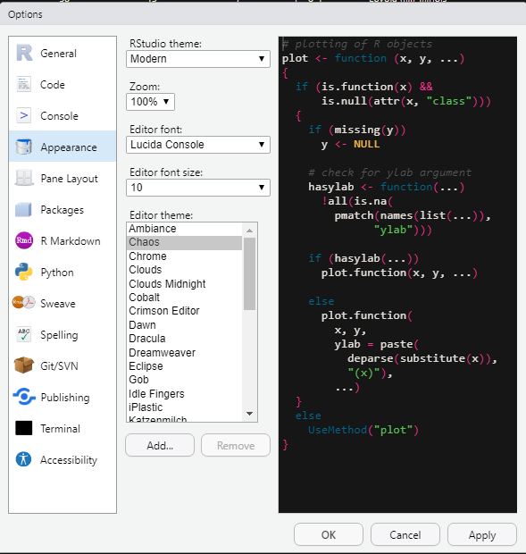
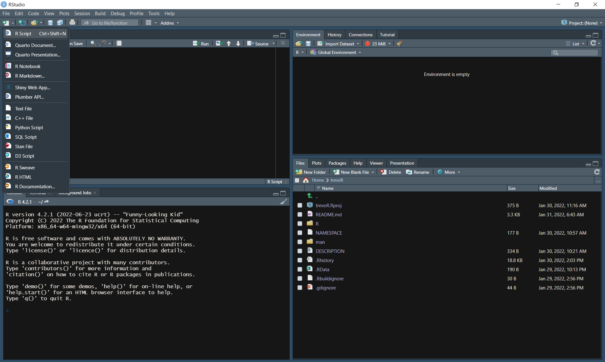
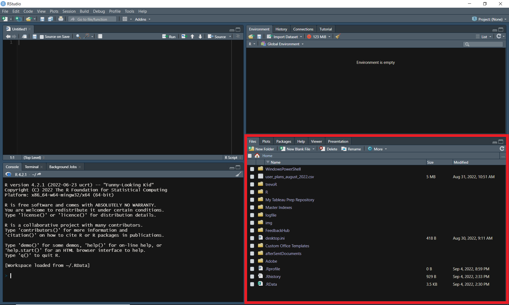

4 Getting Familiar with RStudio
To begin, we are going to walk through customizing your version of RStudio to make it the most comfortable environment for you personally. Following this, we are going to walk through the four panes of RStudio. At a glance, RStudio may seem overwhelming; however, by the end of this chapter you will have learned the essentials needed to embark on your data analysis journey.
4.1 Customization
You are able to customize how your version of RStudio looks by following these steps:
- Open RStudio and choose ‘tools’ from the toolbar
- Choose ‘Global Options’
- Choose ‘Appearance’ and select your favorite theme from the ‘Editor Theme’ section

- Press ‘Apply’
There are other customization options avaialable as well. Feel free to explore the “Global Options” section to make your version of RStudio your own.
4.2 Source Pane
The source pane is the top left pane in RStudio. This is where you will write and edit your code.
If you don’t see the source pane, you may need to create a new R script by pressing “Ctrl + Shift + N” (“Cmd + Shift + N” on Mac) or by selecting “R Script” from the “New File” dropdown in the top left corner.

Each element of the source pane is outlined below.

- Show in New Window- This allows you to pop the source pane into a new window by itself.
- Save Current Document- This saves the file contained in the tab you currently have active.
- Source on Save- Automatically sources your file every time you hit save. “Sourcing” is similar to “Running” in the sense that both will execute your code; however, sourcing will execute your saved file rather than copying lines of code into the console.
- Find/Replace- this feature allows you to find and replace specified text, similar to find and replace features in other tools such as Excel.
- Code Tools- This brings up a menu of options which help you to code more efficiently. Some of these tools include formatting your code and help with function definitions.
- Compile Report- This allows you to compile a report directly from an R script without needing to use additional frameworks such as R Markdown.
- Run Current Selection- This allows you to highlight a portion of your code and run only that portion.
- Re-run Previous Code Region- This option will execute the last section of code that you ran.
- Go to Previous/Next Section/Chunk- These up and down arrows allow you to navigate through sections of your code without needing to scroll.
- Source Contents- This option will save your active document if it isn’t already saved and then source the file.
- Outline- Pressing this option will pop open an outline of your current file.
- Adjust Frame Size- These two options will adjust the size of the source pane inside of R Studio.
- Syntax Highlighting- This allows you to adjust the syntax highlighting of your active document to match the highlighting of other file types.
- “Jump To” Menu- This menu allows you to quickly jump to different sections of your code.
- Cursor Position- This displays your current cursor position by row and column.
- Row Numbers- Display the row number for each line of your code on the left side of the document.
- Back/Forward- These arrows are navigation tools that will allow you to redo/undo the following actions: opening a document (or switching tabs), going to a function definition, jumping to a line, and jumping to a function using the function menu (Paulson 2022).
- Tab- This is a tab in the traditional sense, meaning you are able to have a collection of documents open displayed as tabs. These tabs will have the title of your document and often an icon of some sort to demonstrate the file type.
4.3 Console
The console pane is the bottom left pane in RStudio. This pane has three tabs: “Console”, “Terminal”, and “Background Jobs”.
The “Console” tab is where you will be able to run R code directly without writing a script (this will be covered in the next chapter).
The “Terminal” tab is the same terminal you have on your computer. This can be adjusted in the global options.
The “Background Jobs” tab is where you can start and manage processes that need to run behind the scenes.

4.4 Environment
The environment pane is the top right pane in RStudio. This is where you will manage all things related to your development environment. This pane has four tabs: “Environment”, “History”, “Connections”, and “Tutorial”.
The “Environment” tab will display all information relevant to your current environment. This includes data, variables, and functions. This is also the place where you can view and manage your memory usage as well as your workspace.
The “History” tab allows you to view the history of your executed code. You can search through these commands and even select and re-execute them.
The “Connections” tab is where you can create and manage connections to databases.
The “Tutorial” tab delivers tutorials powered by the “learnr” package.

4.5 Files
The files pane is the bottom right pane in RStudio. This pane has six tabs: “Files”, “Plots”, “Packages”, “Help”, “Viewer”, and “Presentation”.
The “Files” tab is a file explorer of sorts. You can view the contents of a directory, navigate to new directories, and manage files here.
The “Plots” tab is where the output of your generated plots will show up. You can also export your plots from this tab.
The “Packages” tab allows you to view all available packages within your environment. From this tab, you can read more about each package as well as update and access packages.
The “Help” tab allows you to search for information about functions to include examples, descriptions, and available parameters.
The “Viewer” tab is where certain types of content such as quarto documents will be displayed when rendered.
The “Presentation” tab is similar to the “Viewer” tab except the content type will be presentations.

4.6 Resources
- “Editing and Executing Code in the RStudio IDE” from the R Studio Support team: https://support.rstudio.com/hc/en-us/articles/200484448-Editing-and-Executing-Code
- “Code Folding and Sections in the RStudio IDE” from the R Studio Support team: https://support.rstudio.com/hc/en-us/articles/200484568-Code-Folding-and-Sections-in-the-RStudio-IDE
- “Keyboard Shortcuts in the RStudio IDE” from the R Studio Support team: https://support.rstudio.com/hc/en-us/articles/200711853-Keyboard-Shortcuts-in-the-RStudio-IDE
- “Navigating Code in the RStudio IDE” from the R Studio Support team: https://support.rstudio.com/hc/en-us/articles/200710523-Navigating-Code-in-the-RStudio-IDE